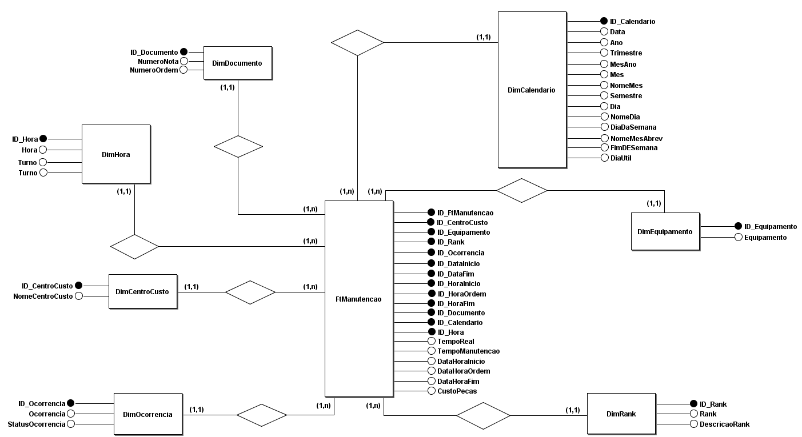
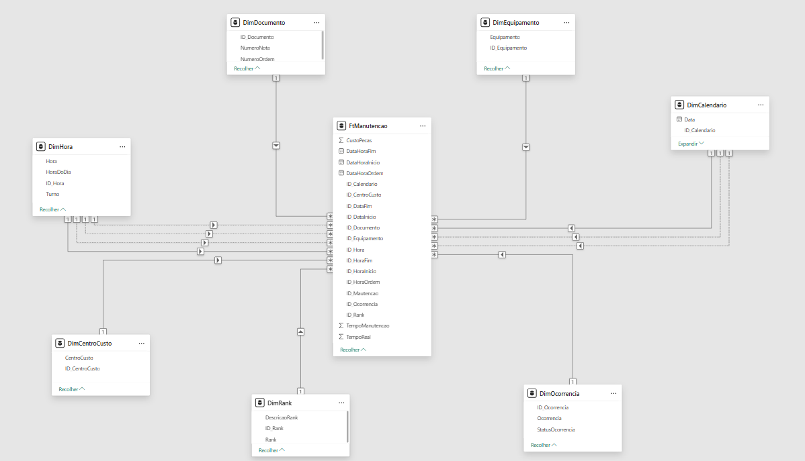

01 Visão Geral
1.1 Objetivo do Dashboard
Desenvolver um dashboard no Power BI para analisar os registros de acidentes de trabalho no Brasil, permitindo identificar padrões e características dos acidentes registrados a partir dos dados disponibilizados pelo Portal de Dados Abertos do INSS.
2 Contexto
Quais são as principais características dos acidentes de trabalho registrados e como esses registros se distribuem ao longo do tempo, território, perfil dos trabalhadores e características dos acidentes. O dashboard analisa as “CATs” emitidas entre janeiro de 2024 e julho de 2026. O período de análise é determinado pela data de emissão da CAT. A data do acidente é mantida para análises relacionadas ao momento em que o acidente ocorreu.
3 Objetivos específicos
- Analisar a evolução temporal dos registros de Comunicação de Acidente de Trabalho (CAT)
- Comparar a distribuição dos registros entre as Unidades da Federação
- Analisar a distribuição dos registros por sexo
- Avaliar a ocorrência de afastamentos do trabalho
- Analisar as características das lesões registradas
- Analisar os registros com indicação de óbito
- Explorar as atividades econômicas relacionadas aos empregadores
- Identificar outros padrões relevantes a partir das informações disponíveis na base
4 Fonte de Dados
- Origem: Portal de Dados Abertos do INSS
- Conjunto de dados: Ministério do Trabalho e Emprego
- Formato dos arquivos: Arquivo CSV (.csv)
- Periodicidade de disponibilização: mensal.
- Link da fonte: [https://dados.gov.br/dados/conjuntos-dados/comunicacoes-de-acidente-de-trabalho-cat-plano-de-dados-abertos-jun-2023-a-jun-2025]
- Origem: Portal de Dados Abertos do INSS
- Conjunto de dados: Ocupação CBO oficial
- Formato dos arquivos: Arquivo CSV (.csv)
- Periodicidade de disponibilização: Mensal.
- Link da fonte: [https://www.gov.br/trabalho-e-emprego/pt-br/assuntos/cbo/servicos/downloads]
6 Escopo e critérios da análise
6.1 Escopo temporal
O projeto analisará os registros de Comunicação de Acidente de Trabalho (CAT) emitidos entre janeiro de 2024 e julho de 2026, utilizando a coluna Data Emissão CAT como referência para definir o período de análise.
A coluna Data Acidente será mantida para permitir a análise da data em que o acidente efetivamente ocorreu, reconhecendo que a emissão da CAT pode acontecer em data diferente da ocorrência do acidente.
6.2 Escopo geográfico
A análise terá abrangência nacional, considerando os registros disponíveis para o Brasil. Serão utilizadas as informações de Unidade da Federação (UF) do município de ocorrência do acidente e de localização do empregador, permitindo observar a distribuição territorial dos registros sob diferentes perspectivas.
6.3 Escopo dos dados
A fonte de dados utilizada será o Portal de Dados Abertos do Instituto Nacional do Seguro Social (INSS), por meio dos arquivos mensais de Comunicação de Acidente de Trabalho (CAT).
O projeto utilizará informações disponíveis na fonte sobre datas, características do acidente, perfil do segurado, localização, atividade econômica do empregador, natureza da lesão e indicação de óbito, entre outros campos relevantes para as análises propostas.
6.4 Critérios de inclusão e tratamento
Serão considerados para a análise os registros cuja Data Emissão CAT esteja dentro do período definido para o projeto, de janeiro de 2024 a julho de 2026.
Os dados passarão por etapas de preparação e validação, incluindo padronização de tipos de dados, tratamento de valores ausentes ou inválidos, verificação de duplicidades e avaliação da consistência dos campos utilizados. Os critérios específicos de tratamento serão documentados na seção de ETL e transformações.
6.5 Dimensões de análise
O dashboard buscará explorar os registros de CAT segundo as seguintes perspectivas:
- Evolução temporal dos registros
- Distribuição geográfica por UF do acidente e do empregador
- Perfil dos segurados, conforme as informações disponíveis na fonte
- Tipo de acidente
- Natureza da lesão e parte do corpo atingida
- Agente causador do acidente
- Ocorrência de afastamento do trabalho
- Indicação de óbito
- Atividade econômica e tipo de empregador
6.6 Limitações e ressalvas
Os resultados representarão os registros de CAT disponibilizados pela fonte para o período e os critérios definidos neste projeto. Portanto, não deverão ser interpretados automaticamente como o total de todos os acidentes de trabalho efetivamente ocorridos no Brasil.
A disponibilidade, o preenchimento e a consistência dos campos poderão limitar determinadas análises. Essas limitações serão registradas à medida que forem identificadas durante a preparação e validação dos dados.
6.7 Dicionário da fonte de dados
Aqui não mudamos o significado original dos campos, continuamos documentando as 27 colunas conforme a fonte.
| Campo | Significado | Tipo de dado | Exemplo | Observação |
| Agente Causador Acidente | O que causou o acidente (queda, esforço, carro, motocicleta etc.) | Texto | Maquina Agricola | ----------------------- |
| Data Acidente (1) | Data em que ocorreu o acidente. | Data | 07/07/2026 | |
| CBO (código) | Código Brasileiro de Ocupação. | Texto | 862150 | O CSV possui uma coluna de código e uma de descrição. |
| CBO (descrição) | Descrição do Código Brasileiro de Ocupação ( ex: pedreiro, enfermeiro, soldador etc.) | Texto | 862150 - Oper. Máquina | A base possui registros que não estão classificados. |
| CID-10 (código) | Código Internacional de Doenças (CID) do titular do benefício. | Texto | M25.5 | O CSV possui uma coluna de código e uma de descrição. |
| CID-10 (descrição) | Descrição do código Internacional de Doenças (CID) do titular do benefício. | Texto | M25.5 - Dor Articular | A base possui registros que não estão classificados. |
| CNAE2.0 Empregador (código) | Código Nacional de Atividades Econômicas - Define a produção de bens e serviços do empregador. | Texto | 724 | O CSV possui uma coluna de código e uma de descrição. |
| CNAE2.0 Empregador (descrição) | Descrição do Código Nacional de Atividades Econômicas - Define a produção de bens e serviços do empregador. | Texto | 724 - Extração de Minério | A base possui registros que não estão classificados. |
| Emitente CAT | Agente que emite a CAT (empregador, segurado, sindicato etc.) | Texto | Empregador | A base possui registros que não estão classificados. |
| Espécie do benefício | Espécie do benefício concedido ao segurado que sofreu o acidente. | Texto | Pa | A codificação precisa ser compreendida. |
| Filiação Segurado | Forma de filiação à Previdência Social atribuída ao titular do benefício. | Texto | Empregado | A base possui registros que não estão classificados. |
| Indica Óbito Acidente | Informa se houve óbito. | Texto | Sim | ----------------------- |
| Munic Empr | Município da Sede da Empresa | Texto | 330240 - Macaé | A base possui registros que não estão classificados. |
| Natureza da Lesão | Descrição da lesão sofrida no acidente (doença, lesões, fratura, escoriações etc.) | Texto | Fratura | ----------------------- |
| Origem de Cadastramento CAT | Indica a forma utilizada para cadastro da CAT. | Texto | Internet | A base possui registros que não estão classificados. |
| Parte Corpo Atingida | Indica a parte do corpo atingida pelo acidente (cabeça, tórax, dedo etc.) | Texto | Dedo | ----------------------- |
| Sexo | Sexo do titular do benefício. | Texto | Feminino | A base possui registros indeterminados e não informados. |
| Tipo do Acidente | Trajeto, típico e doença. | Texto | Típico | ----------------------- |
| UF Munic. Acidente | UF do Município onde ocorreu o acidente do trabalho | Texto | Tocantins | A base possui registros zerados e não classificados. |
| UF Munic. Empregador | Unidade da Federação do Município Sede do empregador | Texto | São Paulo | A base possui registros que estão zerados. |
| Data Afastamento | Data que o segurado se afastou do trabalho em decorrência do acidente do trabalho. | Data | 10/07/2026 | ----------------------- |
| Data Despacho Benefício | Data que o benefício foi concedido. | Data | 22/06/2026 | ----------------------- |
| Data Acidente (2) | Data em que ocorreu o acidente. | Data | 06/07/2026 | Coluna duplicada. |
| Data Nascimento | Data de nascimento do titular do benefício | Data | 16/08/1994 | ----------------------- |
| Data Emissão CAT | Data em que a Comunicação de Acidente do Trabalho foi emitida | Data | 13/07/2026 | A data de emissão da CAT pode ser diferente da data do acidente. |
| Tipo de Empregador | CNPJ ou CGC | Texto | Cnpj/Cgc | A base possui registros que não estão classificados. (Codificação/valores a confirmar) |
| CNPJ/CEI Empregador | Cadastro Nacional de Pessoa Juriica do Empregador ou | Texto | 9,45942E+13 | A descrição termina de forma incompleta. |
7 Tratamento e organização dos dados
7.1 Camada bronze - CAT_Bronze
A camada Bronze corresponde à consolidação dos arquivos mensais de Comunicação de Acidente de Trabalho (CAT) utilizados no projeto, abrangendo o período de janeiro de 2024 a julho de 2026.
Nessa etapa, os arquivos foram combinados por meio do conector de pasta do Power BI/Power Query, mantendo-se os dados o mais próximo possível da estrutura disponibilizada pela fonte.
As principais etapas realizadas foram a consolidação dos arquivos e a organização inicial das colunas. Não são aplicadas nessa camada regras de negócio ou tratamentos destinados à análise.
7.2 Camada prata - CAT_Prata
A camada Prata é derivada da camada Bronze por meio de uma consulta referenciada e tem como objetivo preparar, padronizar e validar os dados para utilização no modelo dimensional.
Durante a análise dos arquivos originais, foi identificada a ocorrência do valor {ñ class} em diferentes campos categóricos, incluindo Agente Causador Acidente; CBO descrição, CID10 descrição; CNAE2.0 Empregador; Emitente CAT; Filiação Segurado; Município do Empregador; Origem de Cadastramento CAT; UF do Município do Acidente e Tipo de Empregador.
O valor foi identificado em todos os arquivos analisados. Esses registros representam informações sem classificação disponível na base e serão tratados na camada Prata de forma a preservar essa condição, sem convertê-los automaticamente em valores nulos. Entre os tratamentos realizados estão:
- Definição e revisão dos tipos de dados
- Conversão dos campos de data para o tipo Data
- Tratamento de caracteres especiais e espaços
- Aplicar funções de corte de espaços (Limpar e Aparar)
- Padronizar maiúsculas/minúsculas (ex: ProperCase)
- Substituição de valores inválidos de data, como 00/00/0000, por valores nulos (null)
- Padronização do valor {ñ class} para “Não Classificado” nos campos categóricos em que essa ocorrência foi identificada
- Manutenção dos códigos e valores especiais disponibilizados pela fonte quando não houver regra de transformação definida
- Remover linhas totalmente vazias ou com erros técnicos
- Alterar nomes técnicos da origem das colunas para nomes claros e consistentes
- A coluna CID-10 com linhas sem informação do código CID-10 são mantidos na base, com o campo sem valor. A ausência do código não é utilizada como critério para exclusão do registro, uma vez que as demais informações do acidente permanecem disponíveis para análise
7.3 Padronização dos nomes das colunas
Os nomes dos campos foram ajustados na camada Prata para estabelecer uma nomenclatura padronizada e facilitar a identificação e utilização das informações nas etapas posteriores de modelagem e análise.
| Nome original | Nome padronizado | Tratamento |
| Agente Causador Acidente | AgenteCausador | Padronização PascalCase |
| Data Acidente | DataAcidente | Padronização PascalCase |
| CBO | CBOCodigo | Padronização PascalCase |
| CBO_1 | CBODescricao | Padronização PascalCase |
| CID-10 | CID10Codigo | Padronização PascalCase |
| CID-10_2 | CID10Descricao | Padronização PascalCase |
| CNAE2.0 Empregador | CNAEEmpregadorCodigo | Padronização PascalCase |
| CNAE2.0 Empregador_3 | CNAE2EmpregadorDescricao | Padronização PascalCase |
| Emitente CAT | EmitenteCAT | Padronização PascalCase |
| Espécie do benefício | EspecieBeneficio | Padronização PascalCase |
| Filiação Segurado | FiliacaoSegurado | Padronização PascalCase |
| Indica Óbito Acidente | IndicaObitoAcidente | Padronização PascalCase |
| Munic Empr | MunicipioEmpregador | Padronização PascalCase |
| Natureza da Lesão | NaturezaLesao | Padronização PascalCase |
| Origem de Cadastramento CAT | OrigemCadastramentoCAT | Padronização PascalCase |
| Parte Corpo Atingida | ParteCorpoAtingida | Padronização PascalCase |
| Sexo | Sexo | Padronização PascalCase |
| Tipo do Acidente | TipoAcidente | Padronização PascalCase |
| UF Munic. Acidente | UFMunicipioAcidente | Padronização PascalCase |
| UF Munic. Empregador | UFMunicipioEmpregador | Padronização PascalCase |
| Data Afastamento | DataAfastamento | Padronização PascalCase |
| Data Despacho Benefício | DataDespachoBeneficio | Padronização PascalCase |
| Data Acidente_4 | DataAcidente2 | Padronização PascalCase |
| Data Nascimento | DataNascimento | Padronização PascalCase |
| Data Emissão CAT | DataEmissaoCAT | Padronização PascalCase |
| Tipo de Empregador | TipoEmpregador | Padronização PascalCase |
| CNPJ/CEI Empregador | CNPJ/CEIEmpregador | Padronização PascalCase |
7.4 Inventário das tabelas do modelo
Tabelas Dimensão
| Tabela | Tipo | Finalidade | Origem |
| CAT_Bronze | Staging / Bronze | Consolidar os arquivos mensais da fonte. | Arquivos CSV do INSS. |
| CAT_Prata | Staging / Prata | Padronizar, tipar e tratar os dados. | Referência de CAT_Bronze. |
| CAT_Ouro | Preparação para o modelo | Disponibilizar dados tratados para a modelagem. | Referência de CAT_Prata. |
| dimAgenteCausador | Dimensão | Organizar os agentes causadores dos acidentes de trabalho, permitindo analisar a frequência e a distribuição dos acidentes conforme o agente envolvido. | Referência da CAT_Ouro. |
| dimCalendarioAcidente | Dimensão | Permitir análises temporais pela data do acidente. | Calendário criado no Power Query. |
| dimCalendarioEmissaoCAT | Dimensão | Permitir análises temporais pela data de emissão da CAT. | Calendário criado no Power Query. |
| dimCBO | Dimensão | Organizar os códigos e as descrições das ocupações. | Referência da CAT_Ouro. |
| dimCID10 | Dimensão | Códigos e as descrições da Classificação Internacional de Doenças (CID-10), permitindo analisar os registros por classificação diagnóstica, quando essa informação estiver disponível. | Referência da CAT_Ouro. |
| dimCNAEEmpregador | Dimensão | Códigos e as descrições da Classificação Nacional de Atividades Econômicas (CNAE) do empregador, permitindo analisar a distribuição dos acidentes conforme a atividade econômica da empresa. | Referência da CAT_Ouro. |
| dimLocalidadeEmpregador | Dimensão | Informações de localização do empregador, com base nos campos geográficos disponíveis na fonte, permitindo analisar os acidentes conforme a localização do estabelecimento empregador. | Referência da CAT_Ouro. |
| dimNaturezaLesao | Dimensão | Classificação da natureza da lesão, permitindo analisar os tipos de lesão associados aos acidentes de trabalho. | Referência da CAT_Ouro. |
| dimParteCorpoAtingida | Dimensão | Classificação das partes do corpo atingidas, permitindo identificar quais regiões corporais são mais afetadas nos acidentes de trabalho. | Referência da CAT_Ouro. |
| dimSexo | Dimensão | Categorias de sexo registradas na fonte de dados, permitindo analisar a distribuição dos acidentes de trabalho por sexo. | Referência da CAT_Ouro. |
| dimTipoAcidente | Dimensão | Tipos de acidente registrados, permitindo comparar a ocorrências conforme sua classificação. | Referência da CAT_Ouro. |
| dimTipoEmpregador | Dimensão | Tipos de empregador registrados na fonte, permitindo comparar os acidentes de trabalho conforme a classificação do empregador. | Referência da CAT_Ouro. |
| dimUFAcidente | Dimensão | Unidades federativas onde ocorreram os acidentes, permitindo analisar e comparar sua distribuição geográfica por estado. | Referência da CAT_Ouro. |
Tabela Fato
| Tabela | Tipo | Finalidade | Origem |
| ftAcidente | Fato | A tabela fato será a tabela central do modelo e armazenará os registros de acidentes e as informações necessárias para cruzar esses registros com as dimensões. | Referência da CAT_Ouro. |
- Fonte dos dados
- Arquivo: “Manutenção_Industria_Pneus.csv”.
- Formato: CSV (valores separados por vírgula).
- Origem: Dataset público do Kaggle (ordens de manutenção de uma fabricante multinacional de pneus).
- Período: Janeiro/2015 até Agosto/2022.
- Método de ingestão
- Ferramenta: Power BI Desktop
- Conector Utilizado: Texto/CSV
- Justificativa da Escolha: O dataset é único e estático, não haverá substituições nem cargas incrementais.
- Passos de Ingestão
- No Power BI Desktop, acessar Página Inicial → Obter Dados → Texto/CSV.
- Selecionar o arquivo “Manutenção_Industria_Pneus.csv” no diretório local.
- Confirmar a importação mantendo o encoding padrão (UTF-8) e delimitador vírgula ( , ).
- Nomear a consulta como “Camada Bronze” que será a base para criação da camada prata.
Camada Prata
- Objetivo: A Camada Prata contém os dados tratados e padronizados da tabela de ordens de manutenção, mantendo a rastreabilidade das informações originais, incluindo colunas auxiliares e flags de qualidade. Essa camada serve como base confiável para a criação da Camada Ouro (modelo estrela) no Power BI.
- Processos
- Corrigir tipos de dados (datas, horas, valores).
- Criar colunas auxiliares.
- Padronizar texto (equipamento, centro de custo).
- Remover inconsistências (linhas vazias, duplicadas).
- Nomear como Consulta Prata.
Tratamentos Aplicados
- Padronização de colunas de texto
- Todos os registros de texto das tabelas Dimensão foram convertidos para primeira letra maiúscula.
- Objetivo: Evitar inconsistências e variações de escrita.
- Substituição de valores nulos
- Valores vazios na coluna NumeroOrdem foram substituídos por Sem_Ordem.
- Valores vazios na coluna Rank, foram substituídos por Sem_Rank.
- Criação de coluna derivada do Status da Ocorrencia
- Coluna StatusOcorrencia criada a partir da coluna Ocorrencia.
- 1 = Máquina Parada
- 2 = Máquina Parada Parcialmente
- 3 = Máquina Funcionando
- 4 = Não Informado
- 5 = Não Informado
- 6 = Não Informado
- 7 = Não Informado
- 8 = Não Informado
- Objetivo: Facilitar a interpretação e análise operacional.
- Criação de coluna derivada da descrição do Rank
- Coluna DescricaoRank criada a partir da coluna Rank.
- A = Manutenções com duração maiores ou iguais à 240 minutos
- B = Manutenções com duração entre 20 e 240 minutos
- C = Manutenções com duração entre 0 e 20 minutos
- D = Manutenção de máquinas específicas independente do tempo
- Sem_Rank = Sem classificação
- Criação de colunas auxiliares de data e hora
- DataHoraInicio = DataInicio + HoraInicio
- DataHoraOrdem = DataInicio + HoraOrdem
- DataHoraFim = DataFim + HoraFim
- Tratamento condicional: se hora for nula → valor null
- Objetivo: Possibilitar cálculo de métricas temporais como tempo de execução, tempo total.
- Flags de qualidade
- SemOrdem = True se NumeroOrdem for nulo.
- SemRank = True se Rank for nulo.
- SemHoraInicio, SemHoraOrdem, SemHoraFim = True se respectivas colunas de hora forem nulas.
- SemDataFim = True se DataFim for nula.
- Objetivo: Analisar ordens concluídas e ordens abertas.
- Tratamento de métricas numéricas
- Coluna CustoPecas verificada, sem valores negativos.
- Colunas TempoReal e TempoManutencao corrigidas para número decimal, separador correto ( , ).
- Objetivo: Garantir consistência para cálculos e visualizações.
- Verificação de duplicatas
- NumeroNota e NumeroOrdem conferidos e não apresentaram duplicatas.
- Mantidos como chaves naturais de referência.
- Linhas com dados incompletos
- Mantidas na consulta para permitir análise de ordens abertas e backlog operacional.
Observações Gerais
- A Camada Prata não possui ID’s nem dimensões, sua função é fornecer dados limpos e confiáveis para modelagem analítica na Camada Ouro.
- Mantém a rastreabilidade dos dados originais e registros incompletos, permitindo análises operacionais e históricas.
- Facilita criação de tabelas fato e dimensões, incluindo calendário, equipamentos, centros de custo, ranks e status da ocorrência.
Camada Ouro
- Estrutura do Modelo
- Tabela Fato (FtManutencao): Centraliza os registros das ordens de manutenção, contendo métricas quantitativas (ex.: TempoReal, CustoPecas) e as chaves de ligação com as dimensões.
- Tabelas Dimensão: Fornecem contexto descritivo para análise como tempo, equipamentos, centro de custo, ocorrência, rank, hora, documento etc.
- Relacionamentos
Cada Dimensão possui um relacionamento 1:N com a tabela fato FtManutencao, a direção do filtro é do tipo single da dimensão para a fato, preservando a integridade do modelo estrela sendo:
- DimCalendario: Permite análise temporal em diferentes granularidades (ano, mês, dia).
- DimEquipamento: Identifica de forma única os equipamentos e máquinas da fábrica.
- DimCentroCusto: Possibilita segmentação financeira e administrativa.
- DimOcorrencia: Categoriza o status das ocorrências (parada, funcionando, não informado).
- DimRank: Classifica as manutenções em grupos (A, B, C, D, Sem Rank).
- DimHora: Auxilia análises de ocorrências por horário e turno.
- DimDocumento: Garante integridade e rastreabilidade de ordens e notas.
- Tabelas de dimensão criadas
- DimCalendario: Dimensão temporal que fornece granularidade de análise ao modelo, permitindo relacionar os eventos da Fato com informações de tempo em diferentes níveis (ano, trimestre, mês, semana, dia etc.). Foi criada de forma dinâmica, baseada nos limites de datas existentes na Camada Prata (colunas DataInicio e DataFim), garantindo escalabilidade e atualização automática do período de análise.
Origem: Consulta nula criada no Power Query.
Lógica aplicada:
- DataMinima = menor valor encontrado em DataInicio (camada Prata).
- DataMaxima = maior valor encontrado em DataFim (Camada Prata).
- DataInicial = 1º de janeiro do ano correspondente à data mínima.
- DataFim = 31 de dezembro do ano correspondente à data máxima.
- Duracao = intervalo de dias entre DataInicial e DataFinal.
- List.Dates utilizado para gerar a sequência de datas contínuas.
Relacionamento: Conectada à tabela FtManutencao via chave ID_Calendario, ID_DataInicio e ID_DataFim.
Colunas principais:
- Data: Data no formato completo (DD-MM-YYYY).
- Ano: Ano da data.
- Mes: Número do mês.
- NomeMes: Nome do mês por extenso.
- Trimestre: Identificação do trimestre (1, 2, 3, 4).
- NomeDia: Nome do dia da semana.
- DiaUtil: Flag indicando se o dia é útil ("Sim" ou "Não").
- DimEquipamento: Dimensão de apoio ao modelo, responsável por armazenar a lista de equipamentos existentes nas ordens de manutenção. Permite análises relacionadas ao desempenho, falhas e impactos específicos por equipamento.
Origem: Camada Prata (coluna Equipamento).
Lógica aplicada: Seleção distinta dos valores únicos. Padronização textual (primeira letra maiúscula, remoção de espaços). Inclusão de chave substituta (ID_Equipamento).
Relacionamento: Conectada à tabela FtManutencao via chave ID_Equipamento.
Coluna Principal: Equipamento: Indica o máquina que necessita de manutenção.
- DimCentroCusto: Dimensão responsável por armazenar a lista única de centros de custo da fábrica. Permite análises por setor ou área de operação, e facilita a segmentação das métricas de manutenção por localização administrativa.
Origem: Camada Prata (coluna CentroCusto).
Lógica aplicada: Seleção distinta dos valores únicos. Padronização textual (primeira letra maiúscula, remoção de espaços). Inclusão de chave substituta (ID_CentroCusto).
Relacionamento: Conectada à tabela FtManutencao via chave ID_CentroCusto.
Coluna Principal: CentroCusto: Centro de custo de onde a solicitação de manutenção está sendo emitida.
- Dimocorrencia: Armazena os diferentes tipos de ocorrências associadas às ordens de manutenção. Essa dimensão é fundamental para categorizar os impactos e facilitar a análise de criticidade das ocorrências registradas.
Origem: Camada Prata (coluna Consequencia).
Lógica aplicada: Seleção de valores distintos. Padronização textual (primeira letra maiúscula, remoção de espaços). Inclusão de chave substituta (ID_Ocorrencia).
Relacionamento: Conectada à tabela FtManutencao via chave ID_Ocorrencia.
Colunas Principais: Ocorrencia: Ao gerar uma nota, o colaborador tem que colocar uma ocorrência. StatusOcorrencia: Descrição da situação do equipamento no ato da ocorrência.
- DimRank: Armazena a categorização de manutenções realizadas manualmente pela equipe de manutenção, com base no tempo de execução ou em características específicas das máquinas.
Origem: Camada Prata (coluna Rank).
Lógica aplicada: Seleção de valores distintos. Padronização textual (primeira letra maiúscula, remoção de espaços). Inclusão de chave substituta (ID_Rank).
Relacionamento: Conectada à tabela FtManutencao via chave ID_Rank.
Colunas Principais: Rank: Input manual que a equipe de manutenção faz para categorizar o tempo necessário para e execução. DescricaoRank: Critério de classificação dos tipos de ocorrencias dividido em A, B, C e D.
- DimHora: Fornece a dimensão de tempo por hora do dia, permitindo a análise das manutenções por hora exata, período do dia (manhã, tarde, noite, madrugada). É usada para vincular os horários de início, ordem e fim das manutenções à dimensão de tempo.
Origem: Criada via Consulta Nula no Power Query (tabela sintética).
Lógica aplicada: Valores inteiros de 0 a 23, convertidos para hora do dia e categorizados por turno e inclusão da linha especial 25 = Sem_Hora para permitir relacionamento mesmo em casos de valores nulos na fato.
Relacionamento: Conectada à tabela FtManutencao via chave ID_Hora, ID_HoraInicio, ID_HoraOrdem e ID_HoraFim.
Colunas Principais: Hora: Horas do dia de 00:00 a 23:00. HoraDoDia: Definição de manhã, tarde, noite e madrugada com base na hora. Turno: Definição do turno baseado na hora.
- DimDocumento: Contém informações únicas sobre cada documento ou ordem de manutenção, permitindo relacionar a fato FtManutencao de forma otimizada.
Origem: Camada Prata (coluna NumeroNota, NumeroOrdem).
Lógica aplicada: Remoção de duplicidades. Inclusão de chave substituta (ID_Documentp).
Relacionamento: Conectada à tabela FtManutencao via chave ID_Documento.
Colunas Principais: NumeroNota: Número da nota gerada ao solicitar uma manutenção. NumeroOrdem: Número de ordem gerada pela equipe de manutenção, ao atender uma solicitação.
- Tabela de fatos criada
- FtManutencao: Consolida os registros de ordens de manutenção, com granularidade 1 linha por manutenção. Contém as chaves de relacionamento com as dimensões Calendario, Equipamento, CentroCusto, Ocorrencia, Rank, Hora e Documento.
Origem: Consulta Prata (Manutenção_Industria_Pneus_Prata), proveniente da base operacional da manutenção.
Lógica aplicada: Dados tratados da camada Prata. Substituição de atributos textuais por FKs das dimensões.
- ID_Manutencao: Identificador único da manutenção na tabela fato.
- ID_Calendario: Chave estrangeira para DimCalendario, representando a data de abertura/ocorrência.
- ID_Equipamento: Chave estrangeira para DimEquipamento.
- ID_CentroCusto: Chave estrangeira para DimCentroCusto.
- ID_Ocorrencia: Chave estrangeira para DimOcorrencia.
- ID_Rank: Chave estrangeira para DimRank, utilizada para análises de priorização ou classificação.
- ID_Hora: Chave estrangeira para DimHora.
- ID_Documento: Chave estrangeira para DimDocumento.
- ID_HoraInicio: Horário em que a manutenção começou (extraído do sistema de ordens).
- ID_HoraOrdem: Horário em que a ordem foi registrada/aberta.
- ID_HoraFim: Horário de término da manutenção.
- ID_DataInicio: A data em que foi aberta a solicitação de manutenção.
- ID_DataFim: Data do fim da manutenção.
- TempoManutencao: Tempo líquido da atividade de manutenção (em minutos), desconsiderando intervalos ou atrasos de registro.
- TempoReal: O tempo que levou desde a solicitação até o fim da manutenção.
- CustoPecas: Valor total de peças utilizadas na manutenção.
Observações Gerais
- As colunas de tempo (TempoReal, TempoManutencao) foram padronizadas para minutos, mas todas as medidas DAX convertem para horas quando necessário.
- O campo ID_Ocorrencia é central para os cálculos de disponibilidade, pois diferencia se a manutenção implicou em parada total, funcionamento normal ou parada parcial.
3.2 Modelo Dimensional
Modelo Conceitual: Criado no software brModelo antes do desenvolvimento no Power BI, serviu como guia para definição das entidades, atributos e relacionamentos.

Modelo Estrela (Star Schema): O modelo foi desenvolvido no formato estrela (Star Schema) para facilitar consultas analíticas, manter simplicidade de relacionamento, tipos de cardinalidade e ajustes de integridade referencial garantindo boa performance em cálculos DAX.

3.3 Medidas
Disponibilidade: Calcula a disponibilidade operacional dos equipamentos, dividindo as horas em funcionamento pelas horas disponíveis.
Disponibilidade =
DIVIDE([Horas_Funcionando], [Horas_Disponiveis], 0)
Horas_Disponiveis: Horas totais disponíveis considerando dias úteis, quantidade de equipamentos, turnos e horas por turno.
Horas_Disponiveis =
VAR TurnosPorDia = 3 -- total de turnos por dia
VAR HorasPorTurno = 7 -- horas planejadas por turno
VAR QtdEquipamentos =
DISTINCTCOUNT(DimEquipamento[ID_Equipamento])
VAR DiasUteis =
CALCULATE(
COUNTROWS(DimCalendario),
KEEPFILTERS(DimCalendario[DiaUtil] = "Sim")
)
RETURN
QtdEquipamentos * DiasUteis * TurnosPorDia * HorasPorTurno
Horas_Funcionando: Descrição: Soma do tempo real de funcionamento, considerando ocorrências de tipo 3 (funcionamento normal).
Horas_Funcionando =
CALCULATE(
SUM(FtManutencao[TempoReal]),
FILTER(
DimOcorrencia,
DimOcorrencia[Ocorrencia] = 3
)
)
Horas_Paradas: Soma do tempo de paradas, considerando ocorrências de tipo 1.
Horas_Paradas =
CALCULATE(
SUM(FtManutencao[TempoReal]),
KEEPFILTERS(
FILTER(DimOcorrencia, DimOcorrencia[Ocorrencia] IN {1})
)
)
Horas_Operacionais: Horas disponíveis menos horas paradas, garantindo que não fique negativo.
Horas_Operacionais =
VAR hDisp = [Horas_Disponiveis]
VAR hPar = [Horas_Paradas]
RETURN
MAX(0, hDisp - hPar)
Custo_CentroCusto: Soma dos custos de peças, analisado por centro de custo.
Custo_CentroCusto =
SUM(FtManutencao[CustoPecas])
Custo_Equipamento: Soma dos custos de peças, analisado por equipamento.
Custo_Equipamento =
SUM(FtManutencao[CustoPecas])
CustoTotal_Manutencao: Soma total histórica dos custos de peças em manutenções.
CustoTotal_Manutencao =
SUM(FtManutencao[CustoPecas])
MTBF (Mean Time Between Failures): Tempo médio entre falhas: divide horas operacionais pela quantidade de falhas.
MTBF =
VAR falhas = [Qtd_Falhas]
VAR horasOp = [Horas_Operacionais]
RETURN
IF(falhas = 0, BLANK(), DIVIDE(horasOp, falhas))
MTTR (Mean Time To Repair): Tempo médio para reparo: divide o tempo total de manutenção pela quantidade de falhas.
MTTR =
VAR falhas = [Qtd_Falhas]
VAR sumRep =
CALCULATE(
SUM(FtManutencao[TempoManutencao]),
KEEPFILTERS(
FILTER(DimOcorrencia, DimOcorrencia[Ocorrencia] IN {1, 2})
)
)
RETURN
IF(falhas = 0, BLANK(), DIVIDE(sumRep, falhas))
Qtd_Falhas: Número total de falhas (ocorrências do tipo 1 e 2).
Qtd_Falhas =
CALCULATE(
COUNTROWS(FtManutencao),
KEEPFILTERS(
FILTER(DimOcorrencia, DimOcorrencia[Ocorrencia] IN {1, 2})
)
)
Qtd_EquipamentosFalha: Número de equipamentos distintos que apresentaram falha (Ocorrencia = 2).
Qtd_EquipamentosFalha =
CALCULATE(
DISTINCTCOUNT(FtManutencao[ID_Equipamento]),
FILTER(
DimOcorrencia,
DimOcorrencia[Ocorrencia] = 2
)
)
Qtd_Ocorrencias: Contagem de todas as ocorrências registradas.
Qtd_Ocorrencias =
COUNTROWS(FtManutencao)
Qtd_OcorrenciasEmAberto: Quantidade de ocorrências que não possuem data de fim ou que ultrapassam a data de análise.
Qtd_OcorrenciasEmAberto =
VAR vDataFinal = MAX(DimCalendario[Data])
VAR vOcorrenciasAbertas =
FILTER(
ALL(FtManutencao),
FtManutencao[ID_DataInicio] <= vDataFinal &&
(FtManutencao[ID_DataFim] > vDataFinal || ISBLANK(FtManutencao[ID_DataFim]))
)
RETURN
COUNTROWS(vOcorrenciasAbertas) + 0
TempoMedio_Manutencao: Tempo médio das manutenções com base na coluna TempoReal na tabela FtManutencao.
TempoMedio_Manutencao =
AVERAGE(FtManutencao[TempoReal])